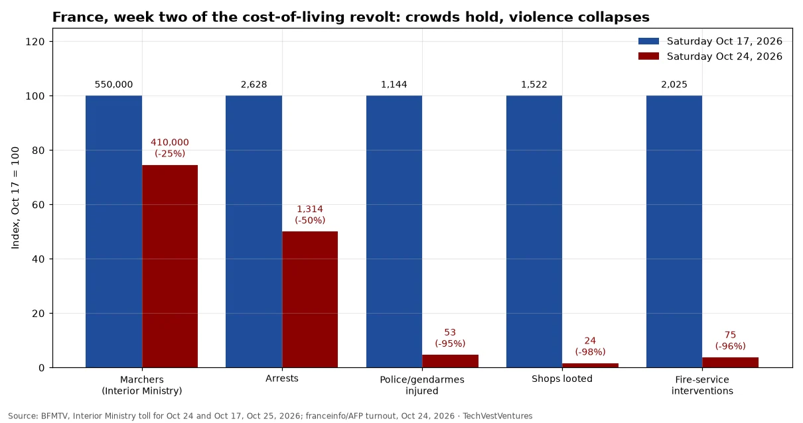

Q7. France Week Two

Official Interior Ministry tallies for the two national Saturdays. Turnout fell about a quarter (550,000 to 410,000; the CGT union claimed about 800,000 both times), but violence fell far more: arrests halved (2,628 to 1,314), injured officers fell from 1,144 to 53, shops looted from 1,522 to 24 and fire interventions from 2,025 to 75. The ministry credits pre-positioned, mobile policing, while saying radical groups were 'as violent as last week'. Lyon saw some 10,000 marchers in unauthorised processions dispersed with tear gas. Note: the ministry's Oct 17 arrest and injury figures were revised up from the 'nearly 2,400' and 'nearly 1,000' used in our Oct 22 study. All figures are provisional.
Sources: BFMTV, Interior Ministry toll for Oct 24 and Oct 17, Oct 25, 2026 franceinfo/AFP turnout, Oct 24, 2026